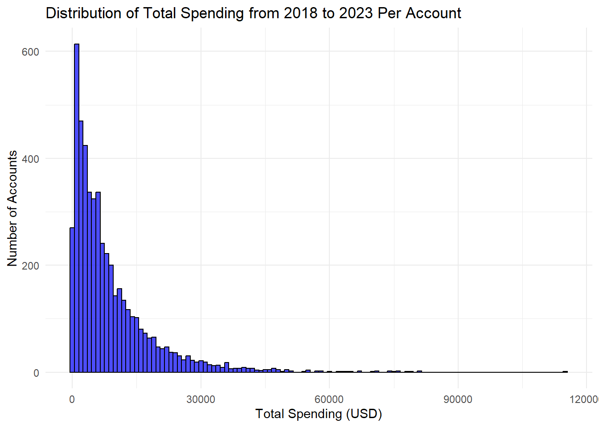
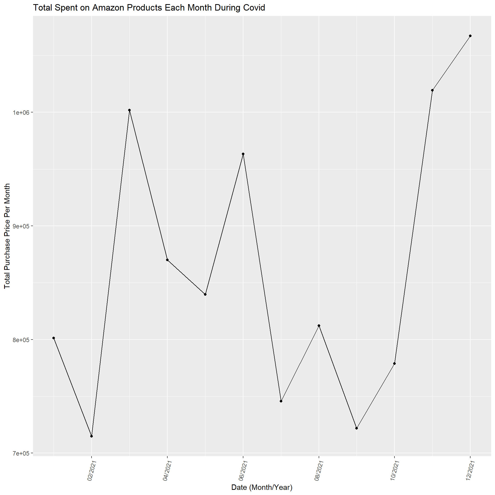
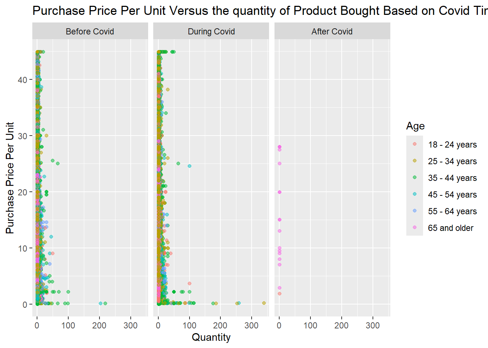
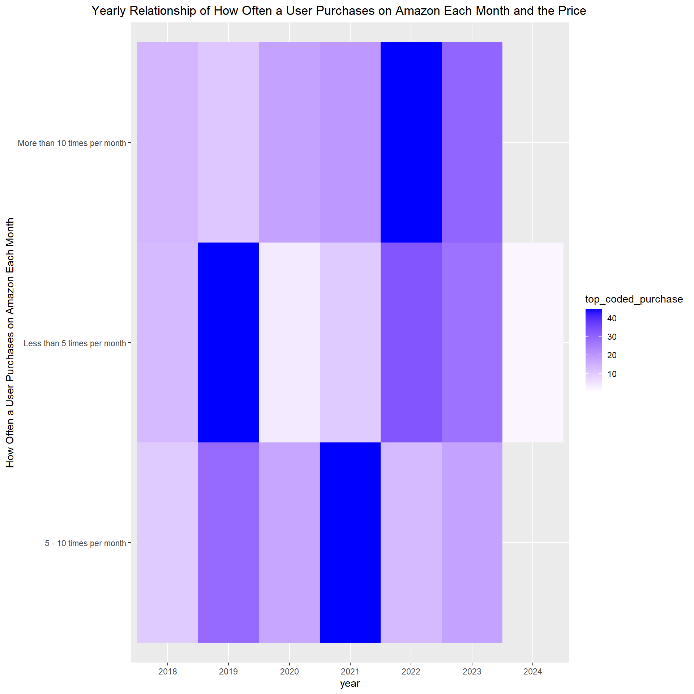
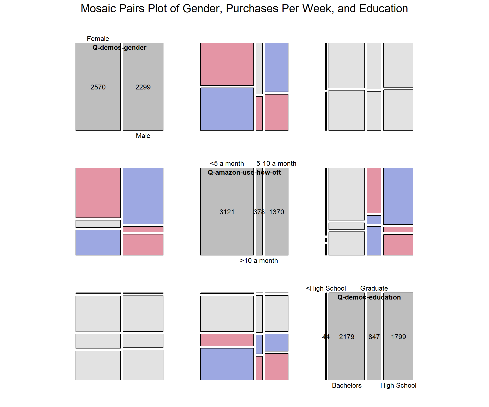
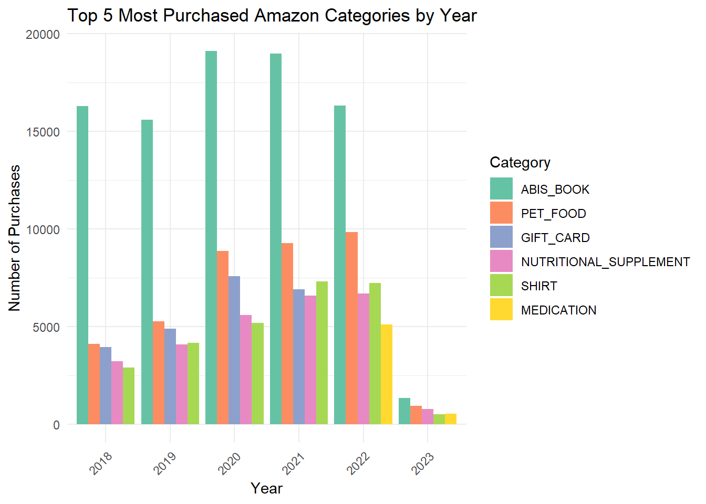
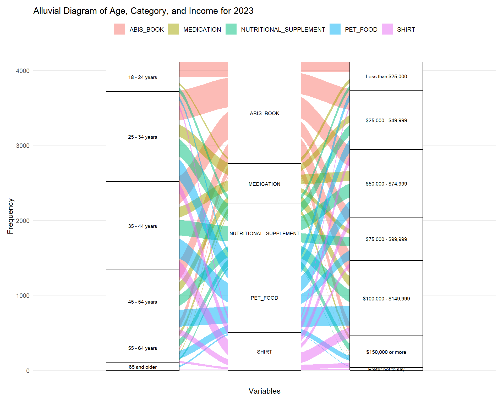

3.1 Distribution of User’s Total Spending on Amazon
Code
# Calculate total spending per useruser_spending <- joined_df %>%mutate(Total_Spent =`Purchase Price Per Unit`* Quantity) %>%group_by(`Survey ResponseID`) %>%summarise(Total_Spent_Per_User =sum(Total_Spent, na.rm =TRUE))# Plot a histogram of total spending per userggplot(user_spending, aes(x = Total_Spent_Per_User)) +geom_histogram(binwidth =1000, fill ="blue", color ="black", alpha =0.7) +labs(title ="Distribution of Total Spending from 2018 to 2023 Per Account",x ="Total Spending (USD)",y ="Number of Accounts" ) +theme_minimal()

This histogram shows the distribution of user’s total spending over 5 years. The number of accounts is the frequency of Amazon users/accounts that spend that much over a total of 5 years. The majority of users spend less than $30,000 in 5 years, with the highest peak being $2,000 within 5 years. This histogram however is right skewed with some users spending almost $12,000 over the 5 year period. Knowing the distribution is skewed we may need to do something with our outliers when we use our data for our other visualizations.
3.2 Boxplot of Price of Purchases Based on Substance Use Habits
Code
substance =select(joined, `Q-substance-use-alcohol`, `Q-substance-use-cigarettes`, `Q-substance-use-marijuana`)substance =mutate(substance, substance_num =rowSums(substance =="Yes"))joined['substance_num']= substance$substance_num#zoomed outggplot(joined, aes(x =factor(`substance_num`) ,y =`Purchase Price Per Unit`)) +geom_boxplot() +ggtitle("Prices of Purchases based Buyers Substance Use Habits") +xlab("Number of Substances the Buyer Uses")
A box plot was made to observe if substance use affects the price of an item a user purchases. The three possible substances that a buyer could use are alcohol, cigarettes, and/or marijuana. Initially, when plotted, the purchase price ranged from $8 to over $6,000. With this wide spread and the number of outliers, this plot is significantly spread out and it is almost impossible to see the actual boxes. However, this plot is still included to show these step as well as to show the outliers since they have an interesting pattern. People with no substance abuse had the most extreme outliers, and the highest purchase price kept decreasing the more substances the buyer used.
Code
#find outliersiqr =summary(joined$`Purchase Price Per Unit`)[["3rd Qu."]]-summary(joined$`Purchase Price Per Unit`)[["1st Qu."]]joined$top_coded_purchase = joined$`Purchase Price Per Unit`#joined with outliers replaced with mean as top_coded_purchasejoined =mutate(joined, top_coded_purchase =ifelse(joined$`Purchase Price Per Unit`>44.89 , 44.89, joined$`Purchase Price Per Unit`))#facet based on genderjoined =filter(joined, `Q-demos-gender`=='Female'|`Q-demos-gender`=='Male')ggplot(joined, aes(x =factor(`substance_num`) ,y = top_coded_purchase)) +geom_boxplot() +facet_wrap(~`Q-demos-gender`) +ggtitle("Prices of Purchases based Buyers Substance Use Habits") +xlab("Number of Substances the Buyer Uses") +ylab("Purchase Price Per Unit")
To solve this readability issue and to see the actual boxes, we made the outliers the mean and got this graph. We also wanted to see if substance abuse purchase patterns were similar for males and females. It’s apparent that the median purchase price is the same across all users, no matter their gender or substance use history. However, buyers that used 3 substances bought lower-priced items compared to the rest, which was an apparent pattern for both genders. Also, females consistently bought lower-priced items than males; however, they had more outliers for the expensive items. In conclusion, since the main difference was between outliers, and we have a process to adjust for outliers so that the amount of substance abuse does not appear to impact the distribution for purchasing price per unit.
3.3 Ridgeline Plot of Purchase Price Based on Education
Code
library(ggridges)
Warning: package 'ggridges' was built under R version 4.4.1
Code
joined =filter(joined, `Q-demos-education`!='Prefer not to say')labels =c("Some High School or Less High School", "High School Diploma/GED", "Graduate/Professional Degree", "Bachelor's Degree")#Replacing outliers as meanggplot(joined, aes(x =`top_coded_purchase`, y =`Q-demos-education`)) +geom_density_ridges() +theme(axis.text.y=element_text(size=8, angle=30, vjust=.8, hjust=0.8)) +scale_y_discrete(labels = labels) +ggtitle("Ridgeline Plot of Purchase Prices Based on Education Level") +xlab("Purchase Price Per Unit") +ylab("Education Level")
Picking joint bandwidth of 0.916
This graph compares the distribution of multiple education levels at once and shows the modes which is why a rideline plot was selected. A similar problem happened in the boxplot where some extreme outliers pushed the rideline out to make it unreadable. So the same process was used where the outliers were replaced with the mean, which is why we see a consistent peak around 44 which was the mean (this shows that all education levels had these outliers). For all education levels, there are very similar shapes showing the majority of the products purchased on Amazon are the cheaper lower priced items. The main difference is that bachelor’s degree has a bigger dip around 18 dollars which is interesting. In conclusion, we see similar patterns with more purchases for cheaper items and peaks where the price is a factor of 5 ($10, $15 etc.) with purchases decreasing as the price increases across all levels.
3.4 Line Graph of Total Spent on Amazon Products Each Month
Code
library(lubridate)
Warning: package 'lubridate' was built under R version 4.4.2
Attaching package: 'lubridate'
The following objects are masked from 'package:base':
date, intersect, setdiff, union
Code
joined$date =format(as.Date(joined$`Order Date`, format="%d/%m/%Y"),"%m/%Y")per_month =summarise(group_by(joined, date), `Total Purchase Price Per Month`=sum(`Purchase Price Per Unit`))per_month$new_date =mdy(paste("01/", per_month$date)) ggplot(data = per_month, aes(x = new_date, y =`Total Purchase Price Per Month`, group =1)) +geom_line() +geom_point() +theme(axis.text.x =element_text(angle =75, hjust =1))+geom_vline(xintercept =as.Date("2020-03-01"), color ="red", size =1) +geom_vline(xintercept =as.Date("2023-05-01"), color ="red", size =1) +geom_rect(aes(xmin=as.Date("2020-03-01"), xmax=as.Date("2023-05-01"), ymin=0, ymax=Inf), alpha =0.01, fill ="light blue") +ggtitle("Total Spent on Amazon Products Each Month") +scale_x_date(date_labels ="%m/%Y", date_breaks ="3 month")
Warning: Using `size` aesthetic for lines was deprecated in ggplot2 3.4.0.
ℹ Please use `linewidth` instead.
Here is a line plot to see purchase cost patterns over time. Specifically, we wanted to see if there is a change in people’s behavior relative to COVID-19, which is why the red lines signal the start and end of COVID-19 and is highlighted in blue. There does seem to be an increase in total purchase costs per month over time. It dives down in 2023, but as we stated earlier, that is due to fewer purchases recorded by the participants (and why there is only one purchase in 2024). However, with so many dates (over 5 years), we decided to zoom in, specifically during the Covid period, to see the purchase patterns more clearly, which is the other graph.
Code
joined$date =format(as.Date(joined$`Order Date`, format="%m/%d/%Y"),"%m/%Y")per_month =summarise(group_by(joined, date), `Total Purchase Price Per Month`=sum(`Purchase Price Per Unit`))per_month$new_date =mdy(paste("01/", per_month$date)) per_month_filter =filter(per_month, per_month$new_date >as.Date("2020-03-01"))per_month_filter =filter(per_month_filter, per_month_filter$new_date <as.Date("2021-06-01"))ggplot(data = per_month_filter, aes(x = new_date, y =`Total Purchase Price Per Month`, group =1)) +geom_line() +geom_point() +theme(axis.text.x =element_text(angle =75, hjust =1))+ggtitle("Total Spent on Amazon Products Each Month During Covid") +scale_x_date(labels = scales::date_format("%d/%Y")) +xlab("Date (Month/Year)")

Zooming into just these dates in 2021, when COVID-19 was still happening, according to the CDC, there was some oscillation and then a low point at the end of summer, which spiked up during December. This shows that each month does not have a consistent increase, and the holiday spike is apparent even when we look at the last graph with all the dates.
3.5 Purchase Price Per Unit Faceted by Before, During, or After COVID
Code
library("forcats")
Warning: package 'forcats' was built under R version 4.4.2
Code
joined['covid_status'] ='During Covid'joined =mutate(joined, covid_status =ifelse(joined$`Order Date`<'2020-03-01' , 'Before Covid', 'During Covid'))joined =mutate(joined, covid_status =ifelse(joined$`Order Date`>='2023-05-11' , 'After Covid', joined$`covid_status`))ggplot(joined, aes(x=Quantity, y= top_coded_purchase, color =`Q-demos-age`)) +geom_point(alpha =0.5) +facet_wrap(~fct_relevel(joined$covid_status, "After Covid", after =Inf)) +ggtitle("Purchase Price Per Unit Versus the quantity of Product Bought Based on Covid Time Period") +guides(color =guide_legend(title ="Age")) +ylab("Purchase Price Per Unit")

To show how purchasing behavior was affected by Covid we split the purchase dates into 3 categories (before, during, and after Covid). We also wanted to how age impacted a purchase’s price and quantity. We used the data where the mean replaced the purchase price outliers so the after Covid values are more readable. It’s important to note that there was less data for after Covid since the CCD stated May 11, 2023 was the last day of Covid and this study ended in 2023 with only 1 purchase from 2024. It looks like only 65 and older users bought during this time but we know this is not accurate since there are so few responses and we know that other age groups also used Amazon (they might have just not reported it or may have not bought on those specific days). So just looking at before and after Covid, there were very similar patterns. However, there seems to be more bulk buying during Covid and 25-34 year olds seem to be purchasing more, and older people are buying cheaper products. However, it’s hard to tell if this is true because the orange point may be covering some pink dots (even with the opacity feature on) and vice versa.
3.6 Heatmap of How Often a User Purchases Each Month vs Price
Code
#Year and how much they used amazon a month#replaced outliers with meanjoined$year =format(as.Date(joined$`Order Date`, format="%d/%m/%Y"),"%Y")ggplot(joined, aes(x =`year`, y =`Q-amazon-use-how-oft`, fill =`top_coded_purchase`)) +geom_tile() +scale_fill_gradient(low="white", high="blue") +ggtitle("Yearly Relationship of How Often a User Purchases on Amazon Each Month and the Price") +ylab("How Often a User Purchases on Amazon Each Month") +guides(color =guide_legend(title ="Product Price Per Unit")) +theme(plot.title =element_text(hjust=0.70))

This heatmap explores people’s buying patterns each year on Amazon. It shows how many times people purchase on Amazon per month and how much those items are. The data had some extreme outliers that made most of the plot white with some pale blue which was unreliable and didn’t tell us anything. So a solution was to change all the outliers to the mean purchase price per unit which resulted in this graph. In the heatmap, users purchased more expensive items in 2022 and 2023, and there was an increase in item prices when they bought more than 10 items per month. Please note 2024 only had 1 colored square since there was only 1 purchase in 2024. We also saw a different pattern before Covid of people buying cheaper items regardless of how often they shopped on Amazon per month and if they did purchase an expensive item it was less than 10 times a month. From this graphic, it appears that no matter how often a user shopped per month at Amazon, people were buying more expensive items towards the end of the study compared to the beginning in 2018.
3.7 Mosiac Pairs Plot of Gender, Purchases Per Week, and Education
Code
library(vcd)survey =filter(survey, `Q-demos-gender`=='Female'|`Q-demos-gender`=='Male')survey =filter(survey, `Q-demos-education`!='Prefer not to say')survey =mutate(survey, `Q-demos-education`=ifelse(survey$`Q-demos-education`=="Some High School or Less High School" , "< High School", survey$`Q-demos-education`))survey =mutate(survey, `Q-demos-education`=ifelse(`Q-demos-education`=="Bachelor's degree", "Bachelors", survey$`Q-demos-education`))survey =mutate(survey, `Q-demos-education`=ifelse(`Q-demos-education`=="Graduate or professional degree (MA, MS, MBA, PhD, JD, MD, DDS, etc)", "Graduate", survey$`Q-demos-education`))survey =mutate(survey, `Q-demos-education`=ifelse(`Q-demos-education`=="Graduate/Professional Degree", "Graduate", survey$`Q-demos-education`))survey =mutate(survey, `Q-demos-education`=ifelse(`Q-demos-education`=="Some high school or less", "<High School", survey$`Q-demos-education`))survey =mutate(survey, `Q-demos-education`=ifelse(`Q-demos-education`=="High school diploma or GED", "High School", survey$`Q-demos-education`))unique(survey$`Q-demos-education`)
survey =mutate(survey, `Q-amazon-use-how-oft`=ifelse(`Q-amazon-use-how-oft`=="Less than 5 times per month", "<5 a month", survey$`Q-amazon-use-how-oft`))survey =mutate(survey, `Q-amazon-use-how-oft`=ifelse(`Q-amazon-use-how-oft`=="5 - 10 times per month", "5-10 a month", survey$`Q-amazon-use-how-oft`))survey =mutate(survey, `Q-amazon-use-how-oft`=ifelse(`Q-amazon-use-how-oft`=="More than 10 times per month", ">10 a month", survey$`Q-amazon-use-how-oft`))variables <-c("Q-demos-gender", "Q-amazon-use-how-oft", "Q-demos-education")# Filter the dataset to include only these variablesdata_for_mosaic <- survey %>%select(all_of(variables)) %>%na.omit() # Remove rows with NA values# Generate the mosaic plotpairs(table(data_for_mosaic), diag_panel =pairs_diagonal_mosaic(offset_varnames=-2.5),cex=1,upper_panel_args =list(shade =TRUE),lower_panel_args =list(shade =TRUE),main ="Mosaic Pairs Plot of Gender, Purchases Per Week, and Education")

To see if the variables have a strong association we used a mosaic plot. Gender and education levels were strongly associated. However, for our topic we are more interested in the association with how often the user purchases from Amazon a month (shopping frequency). When looking at all three variables together, they were not strongly associated. Then if we just look at gender and how often the user shops on Amazon, there appears to be more of an association compared to education level and shopping frequency.
3.8 State Map of Total Amazon Purchases
Code
library(dplyr)library(maps)# Calculate the total number of purchases in each statetotal_purchases_by_state <- joined_df %>%group_by(`Q-demos-state`) %>%summarise(total_purchases =n()) %>%mutate(`Q-demos-state`=tolower(`Q-demos-state`)) %>%arrange(desc(total_purchases))# Load map data for statesstates <-map_data("state")# Join the purchase data with map datastates_purchases <- states %>%rename(`Q-demos-state`= region) %>%left_join(total_purchases_by_state, by ="Q-demos-state")# Plot the data on a mapggplot(states_purchases, aes(long, lat, group = group, fill = total_purchases)) +geom_polygon(color ="black") +scale_fill_viridis_c(option ="magma", na.value ="gray", direction =-1) +theme_minimal() +labs(title ="Total Amazon Purchases from 2018 to 2023 by State", fill ="Total Purchases")
We used a US state map to visualize which states made the most Amazon purchases and which had the least from 2018 to 2023. California had the greatest amount of Amazon purchases by a large margin, while Texas had the second highest. We were not surprised that California had the most purchases, but we were surprised that Texas was second. Many midwest states, such as Montana, North Dakota, South Dakota, and Wyoming, had the least Amazon purchases.
3.9 Grouped Bar Chart of Top 5 Categories Per Year
Code
library(RColorBrewer)# Convert Order Date to Date typepurchase$`Order Date`<-as.Date(purchase$`Order Date`, format="%Y-%m-%d")# Extract Year from Order Datepurchase$Year <-format(purchase$`Order Date`, "%Y")# Group by Year and Category to count purchasescategory_counts <- purchase %>%group_by(Year, Category) %>%summarise(purchases =n()) %>%ungroup()# Remove 'NA' categories and filter out the year 2024category_counts <- category_counts %>%filter(Category !="NA"& Year !="2024")# Get the top 5 most purchased categories for each yeartop_categories <- category_counts %>%group_by(Year) %>%top_n(5, purchases) %>%ungroup()# Order categories within each year by number of purchases (tallest to shortest)top_categories$Category <-factor(top_categories$Category, levels = top_categories %>%group_by(Year) %>%arrange(Year, desc(purchases)) %>%pull(Category) %>%unique())# Choose a qualitative color palettepalette <-brewer.pal(8, "Set2")# Create the grouped bar graphggplot(top_categories, aes(x = Year, y = purchases, fill = Category)) +geom_bar(stat ="identity", position ="dodge") +labs(title ="Top 5 Most Purchased Amazon Categories by Year",x ="Year", y ="Number of Purchases") +scale_fill_manual(values = palette) +theme_minimal() +theme(axis.text.x =element_text(angle =45, hjust =1))

This grouped bar chart shows the top purchases per year. For each year, books are consistently the top category purchased, followed by pet food. However, in 2022 and 2023, gift cards were no longer considered a top category and instead, medicine appeared.
People also bought more nutritional supplements than shirts until 2021 and 2022, and then in 2023 nutritional supplements were more popular again.
3.10 Alluvial Diagram of Age, Amazon Category, and Income for 2023
Code
library(ggalluvial)# Filter for rows where "2023" is in the "Order Date"# and find the top 5 categories by frequencytop_categories <- joined_df %>%filter(grepl("2023", `Order Date`)) %>%count(Category, sort =TRUE) %>%slice_max(n, n =5) %>%pull(Category)# Filter the data for the top 5 categoriesalluvial_data <- joined_df %>%filter(grepl("2023", `Order Date`) & Category %in% top_categories) %>%select(`Q-demos-age`, Category, `Q-demos-income`) %>%filter(!is.na(`Q-demos-age`) &!is.na(Category) &!is.na(`Q-demos-income`))# Create the alluvial diagramggplot(alluvial_data,aes(axis1 =`Q-demos-age`, axis2 = Category, axis3 =factor(`Q-demos-income`, levels =c("Less than $25,000", "$25,000 - $49,999", "$50,000 - $74,999","$75,000 - $99,999", "$100,000 - $149,999", "$150,000 or more", "Prefer not to say")))) +geom_flow(aes(fill = Category)) +geom_stratum(width =0.6) +geom_text(stat ="stratum", aes(label =after_stat(stratum)), size =2.5) +theme_minimal() +labs(title ="Alluvial Diagram of Age, Category, and Income for 2023",x ="Variables",y ="Frequency") +scale_x_discrete(labels =c("Age", "Category", "Income")) +theme(legend.position ="top", # Move legend to the toplegend.title =element_blank(), # Optional: remove legend title for a cleaner lookaxis.text.x =element_text(angle =45, hjust =1), # Optional: tilt axis labelsplot.margin =margin(10, 10, 10, 10) # Reduce blank margins )

We saw the top categories in the bar chart so now we are using an alluvial diagram to see the flow between the demographics, age and income, and the top 5 categories to find any trends or patterns. The book category has the most flow with the younger age groups buying more books on Amazon. This doesn’t mean that younger people read more and older people do not, it just shows that for this study these younger participants are buying more books online through Amazon. The second most frequent purchase category is pet food and we can see people from ages 24-54 are the top customers and usually they have a higher income. It was interesting to see that medication was the most popular for users between 24 and 44 years old with medium incomes at $25,000 - $74,999. This graph gave more insight into the interaction between variables when looking at the top categories.